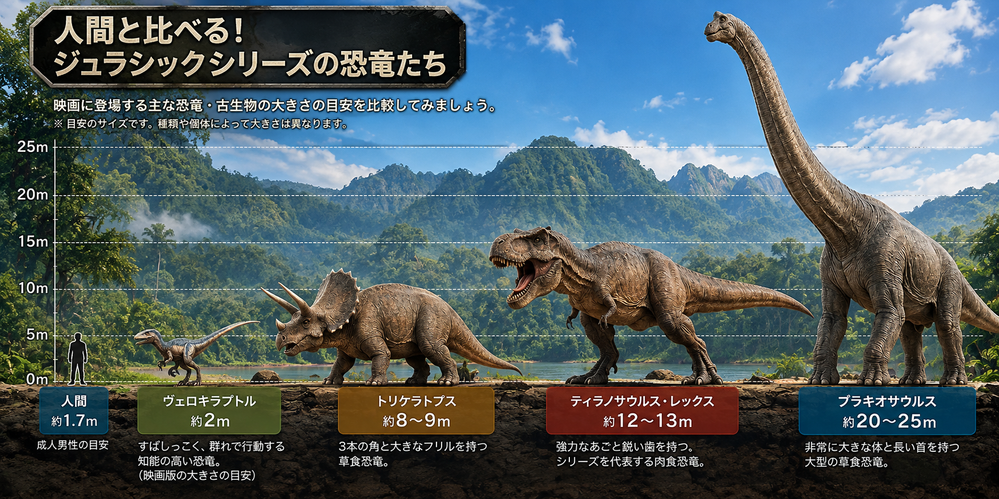

01

映画7作を公開順に。恐竜の物語が、島からどう広がっていくのかを、ネタバレを抑えて案内します。
JURASSIC STORY GUIDE
WELCOME TO JURASSIC WORLD
『ジュラシック・パーク／ワールド』は、現代によみがえった恐竜たちを描く、世界的人気のSFアドベンチャーシリーズです。
遺伝子技術によって恐竜を復活させ、夢のテーマパークを作ろうとする人間たち。しかし、その壮大な計画は思いもよらない事態へと発展していきます。
目の前に本物の恐竜が現れたかのような映像の迫力と、息をのむスリル。
そして、「人間は自然や生命を思いどおりに操れるのか？」という問いも、シリーズを通して描かれています。
映画は全部で7作品。物語の時系列も基本的に公開順と同じなので、難しく考える必要はありません。舞台となる島や人物のつながりは「解説つきで見る」で紹介します。
アニメ作品は寄り道として楽しめます。映画7作品を見るために必須ではありません。
全部見なくても大丈夫！ 作品ごとに異なる冒険が描かれるため、『ジュラシック・ワールド』（2015年）からでも楽しめます。ただし、人物や島の歴史のつながりを味わうなら、1993年の第1作から公開順がおすすめです。
※ アニメ2作品は、映画を楽しむための必須作品ではありません。
作品によって見放題の配信先が異なります。見たい作品がどこで見られるか、比較表で確認できます。
あと7作品で全作品見終わります。
現代に恐竜をよみがえらせる。
夢のパーク計画から物語が始まります。02・03は別の島を舞台にした、それぞれ異なる事件です。


人を探すために島へ向かった一行が、恐竜たちの中で生き延びようとする。
ここで一区切り
01〜03は同じ世界の物語ですが、それぞれ異なる事件を描きます。
01から約22年後、最初の島に新しいパークが開園。


06から5年後。新しい登場人物たちの冒険へ。

PREHISTORIC FIELD GUIDE
映画で見た恐竜たちは、実際にはどんな姿だった？ 実在の恐竜と映画ならではの表現を見比べてみよう。
リアルな古生物イメージで、恐竜の姿を楽しもう。大きさは下の数値で確認できます。

※ イラストは雰囲気を楽しむための参考図です。図中の目盛りや数値は正確な縮尺を保証しません。恐竜の推定サイズは研究によって幅があります。
実際は全長約1.8〜2mで、羽毛を持っていたと考えられる小型の肉食恐竜。映画では全長3〜4mほどの大きな姿で描かれています。
実際も全長約12〜13mに達する巨大な肉食恐竜。映画の迫力ある鳴き声や動きには演出が含まれています。
実在した大型の海生爬虫類で、恐竜ではありません。映画では実際の推定サイズより巨大に描かれています。
※ 数値は目安です。実在種の復元や映画版の描写には不確実性・作品ごとの違いがあります。
『ジュラシック・ワールド』（2015）。映画の世界で遺伝子操作によって作られた架空の恐竜。
『炎の王国』（2018）。映画オリジナルのハイブリッド恐竜。
『復活の大地』（2025）。映画に登場する架空の変異恐竜。
※ 実在した恐竜の映画での姿も、科学的な復元とは異なる場合があります。
恐竜の本当の声はわかっていません。映画では、現代の動物の声を組み合わせて迫力ある鳴き声を作りました。
第1作の恐竜復活の鍵は、琥珀に残された蚊。これは映画の設定で、現実には同じ方法で恐竜を復活させることはできません。
1993年の第1作では、CGと実物大の動く模型（アニマトロニクス）を組み合わせ、恐竜の存在感を表現しました。
映画7作を公開順に見るのがおすすめです。作品の時代もほぼ順番どおりに進みます。
同じ世界で人物のつながりはありますが、各作品で異なる事件を描きます。
大丈夫です。新しい主人公から始まります。ただし旧作を先に見ると、島や再登場人物のつながりをより楽しめます。
映画7作を追うためには必須ではありません。映画の世界をもっと楽しみたくなったら寄り道してください。